RJ Tasks for Teachers walkthrough
See what's waiting to be graded, setup problems, students with missing work, and your week, right inside Canvas. Click any picture to see it bigger.
1. Install it
Open the store page
Installing is your choice, and you can remove it any time. Use Microsoft Edge. The page won't come up in a store search, so use this link:
Click Get, then Add extension
Edge asks you to confirm. It only works on RJ's Canvas site, and it never changes anything in Canvas.
2. Find it
Open your Canvas Dashboard
The My Classes card is at the top of the right side, with Canvas's To Do right below it.
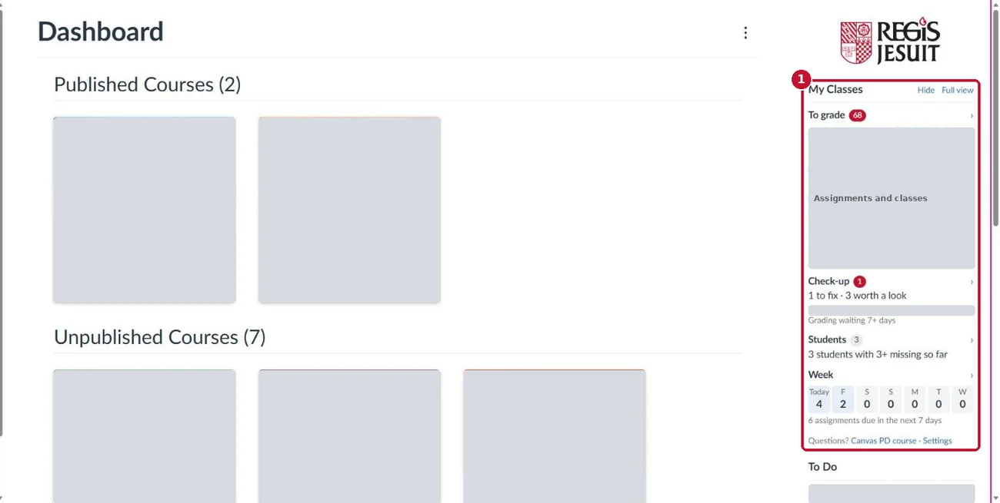
A real teacher's Dashboard, with names and titles covered. Read the card
The card is your quick look. Click any heading or line to go there.
- 1 Full view opens everything.
- 2 Hide folds the card up. Click Show to bring it back.
- 3 Settings is at the bottom.
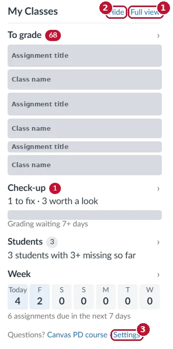
No right side on your Dashboard?
If your Dashboard is a list, look for the My Classes button in the bottom-right corner. You'll also see it on other Canvas pages.
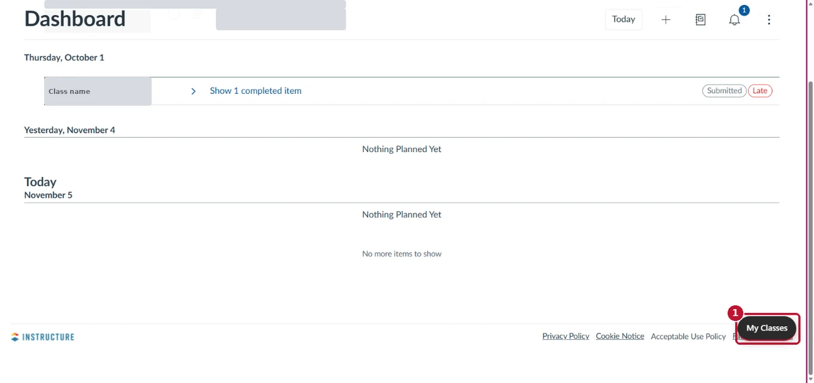
Inside a class, it shows only that class
On a class home page, the card is called This class.
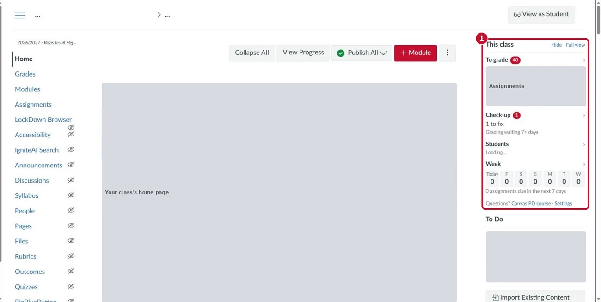


3. To grade, Students and Week
To grade: what's waiting
Click Full view. Oldest waiting comes first, with late and resubmitted work noted.
- 1 Open SpeedGrader goes straight to that assignment.
- 2 Show narrows everything to one class.
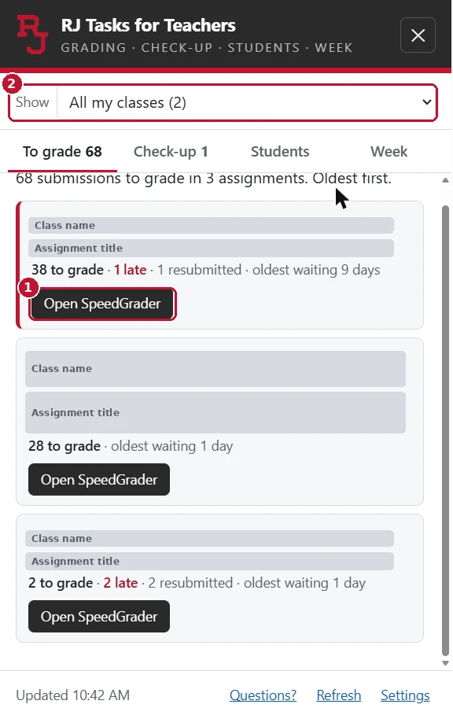
Students: who has missing work
Names stay hidden so your screen is safe to project.
- 1 Choose how many missing assignments count.
- 2 Show names reveals them. They hide again when you close the panel.
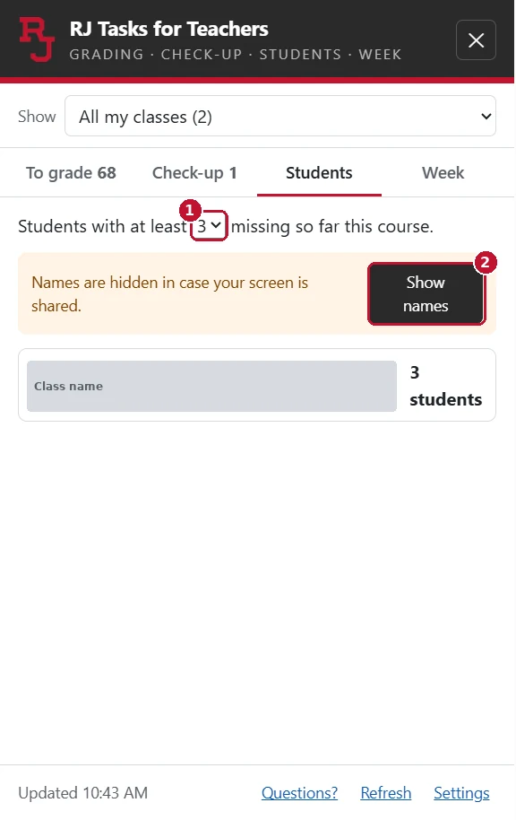
After Show names
Click a student to see what's missing. Open grades goes to their grades. Copy list copies it to paste elsewhere.
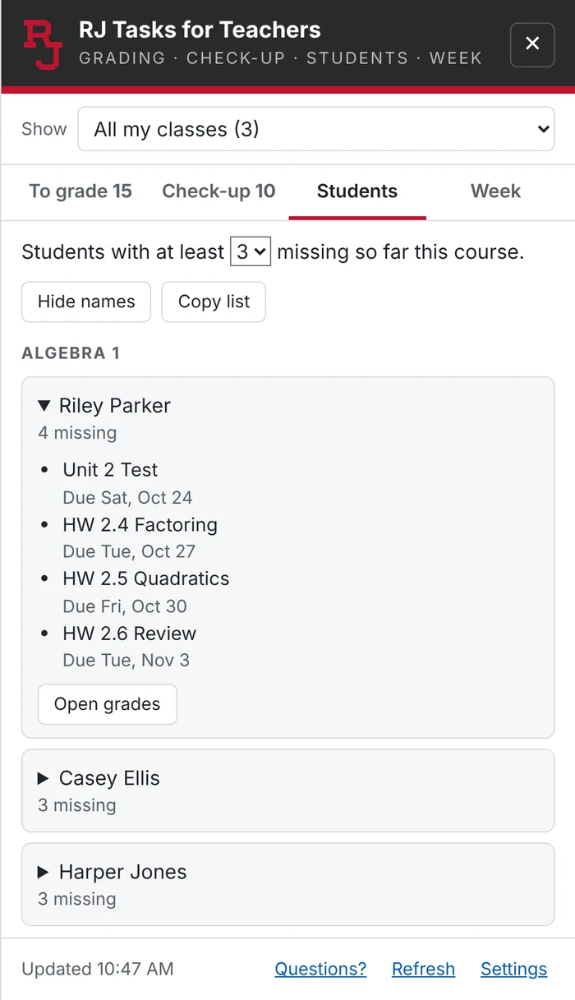
Sample classes and made-up student names. Week: plan your grading
- 1 Grading coming in estimates how many submissions land on you each day for 2 weeks. It leaves out quizzes Canvas grades for you.
- 2 Below that is everything due from your classes in the next 7 days.
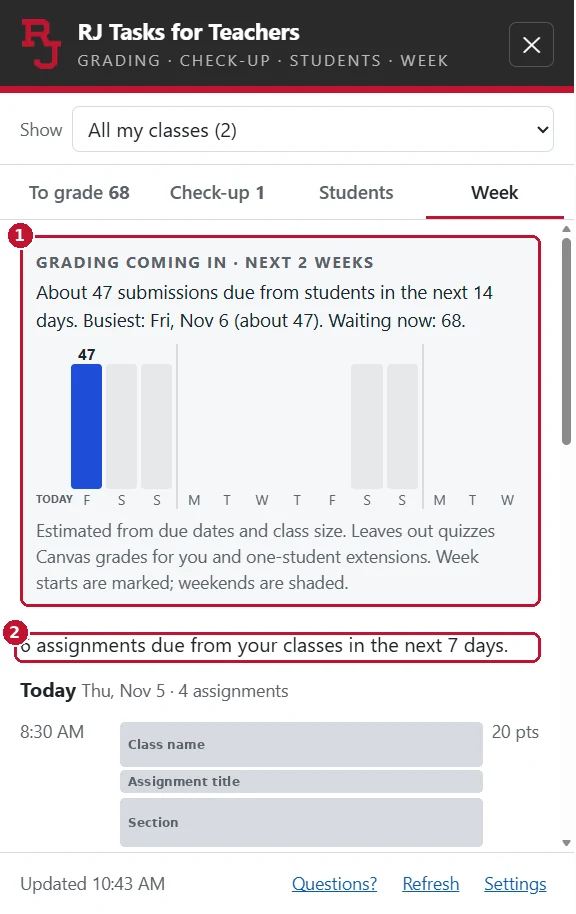
Heavy days
A day is flagged when one class has 3 or more graded assignments due. It's only a heads-up for planning. Canvas doesn't let teachers see other teachers' classes, so this counts yours only.
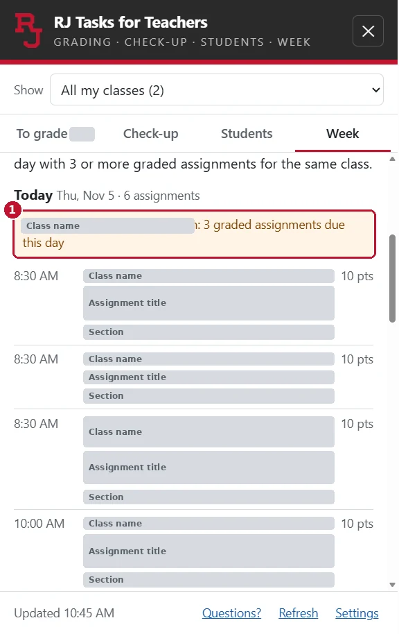


4. Check-up
Open Check-up
Check-up looks for setup problems in your classes. Nobody else sees it, and it never changes anything.
- 1 To fix: likely to cause a problem for students or grades.
- 2 Worth a look: might be just what you intended. You decide.
- 3 Ignore hides one item. Show them again at the bottom brings it back.
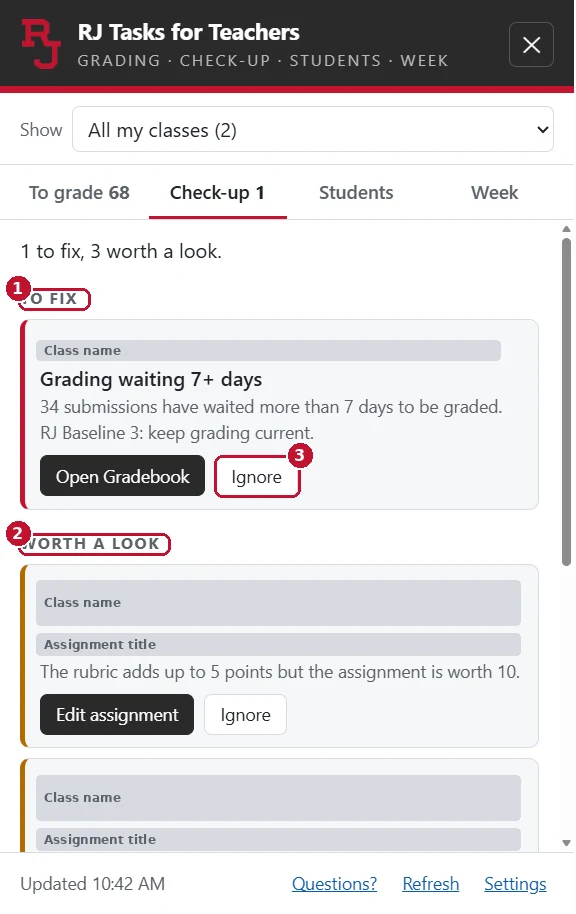
See what it checks
The note at the bottom lists the checks. They start with the RJ Baseline: everything in Modules, the missing policy on, a graded item every week, and grading kept current.
Each item has a button that takes you to the right place to fix it.
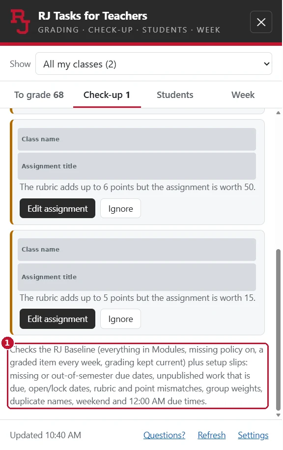


5. Settings
Click Settings
Use Settings at the bottom of the card, or at the bottom-right of Full view. It opens in a new tab. Changes save on their own, and there's no Save button. Click Done when you finish.
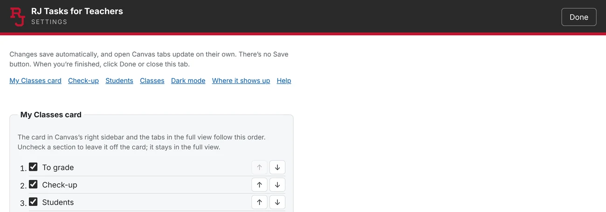
Turn a Check-up check on or off
Under Check-up, uncheck any check you don't want. Check it again to turn it back on. Turn all checks on resets them.
Use Ignore for one item. Use this switch when you never want that check.
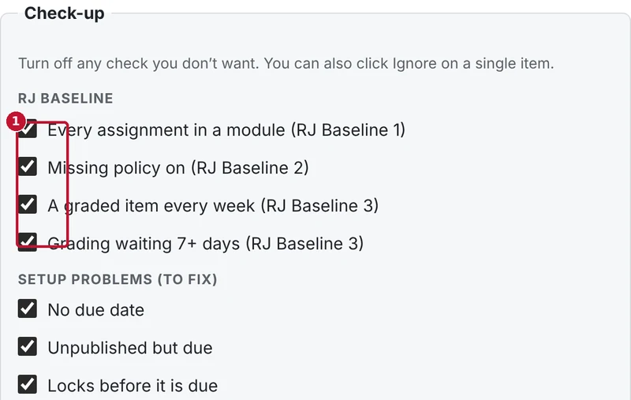
Take Check-up off the card
- 1 Uncheck a section to take it off the card. It stays in Full view.
- 2 The arrows change the order.
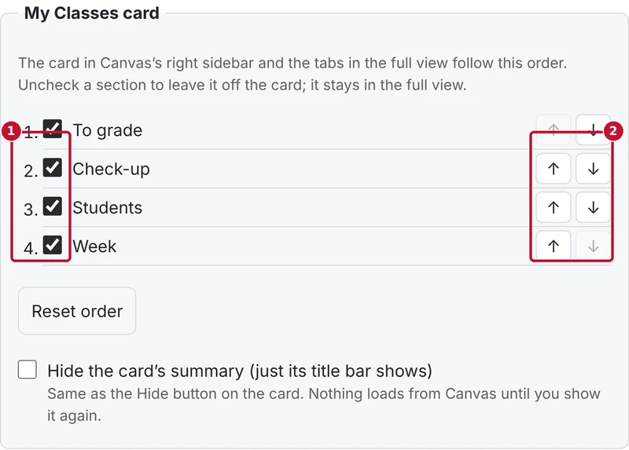
Choose how Students works
Set how many missing assignments count, and whether names stay hidden until you click Show names.
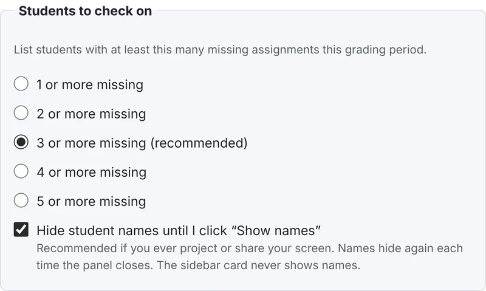
Choose your classes
Only this semester's classes show by default. Uncheck a class to leave it out.
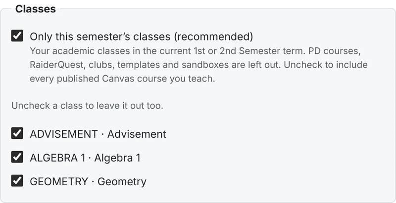
Choose where the button shows
You can show or hide the floating My Classes button on other Canvas pages, and in SpeedGrader and the Gradebook.
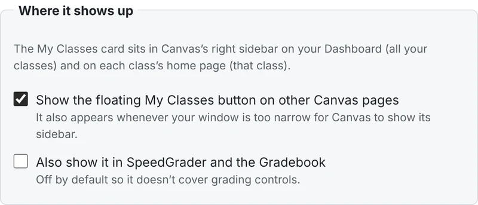
Turn on dark mode
Check Dark mode for Canvas. Images and videos stay as they were made. Quizzes, SpeedGrader and the Gradebook stay light.
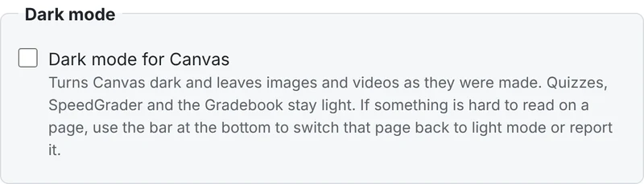
If a dark page is hard to read
Use the bar at the bottom: Show this page in light mode fixes that page right away. Report it tells Ed Tech.
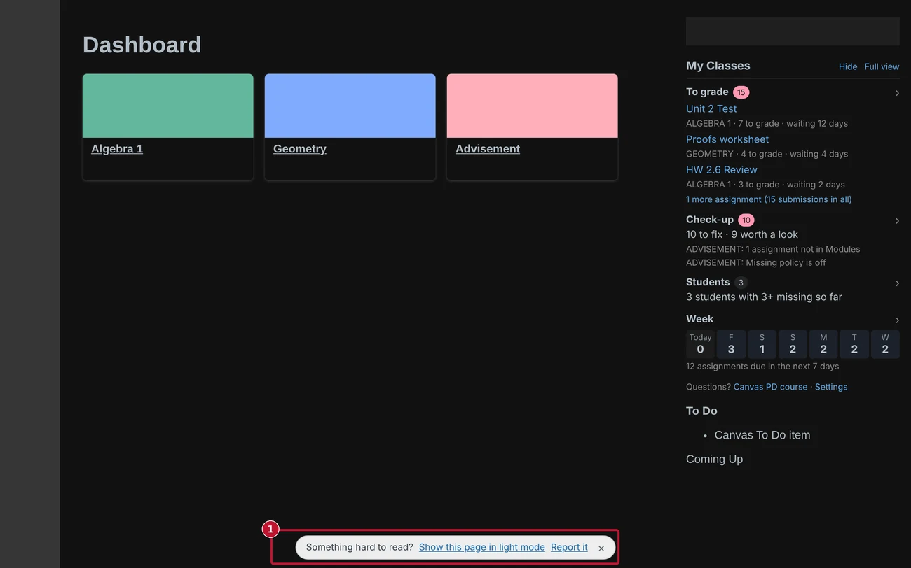
Sample classes.


Need help?
- Canvas questions: click Questions? in Full view to open the Regis Jesuit Professional Development course.
- A bug or an idea: use the RJ Tasks for Teachers form. RJ sign-in required.
- To remove it: go to
edge://extensionsand click Remove under RJ Tasks for Teachers.